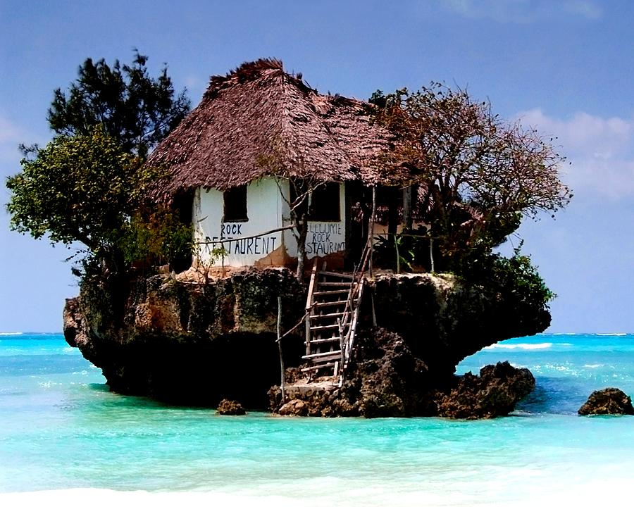

Aliquam erat volutpat. Sed ornare eleifend Sed ornare eleifend sapien quis egestas. Vestibulum
ante ipsum primis in faucibus orci luctus et ultrices posuere cubilia curae; Pellentesque at metus at
purus consequat condimentum. Fusce varius facilisisFusce varius facilisis mauris in congue. Ut
non lorem at enim aliquam blandit. Vestibulum nec mollis augue, non porttitor ante. Aliquam pellentesque
lacus ac diam finibus, eget gravida orci pretium. Cras lobortis vulputate metus, sed aliquet augue
consequat ac.

Viaje inolvidable - Rock restaurant
Sitios que debes visitar
Los Alpes
Los Alpes son una cadena de
montañas
situada en la Europa Central. Su cumbre más alta es el Mont Blanc, con 4810 m s. n. m. Alrededor de
los
Alpes, favorecidos por ríos importantes de caudal uniforme y ricas tierras de cultivo, se ubicaron
desde
la
prehistoria diversos pueblos, principalmente celtas, como los lingones, leucos, insubrios, helvecios
y,
posteriormente, germánicos en el noreste y pueblos itálicos en el sur, después de la conquista
romana de
la
Galia Cisalpina.1 Actualmente viven unos 14 millones de personas en la región de los Alpes.
Isla de Santa Lucía
Santa Lucía (en inglés,
Saint Lucia, en criollo antillano, Sent Lisi) es un pequeño Estado insular de América, ubicado en el
mar Caribe, al norte de San Vicente y las Granadinas y al sur de la isla de la Martinica. Es miembro
de la Comunidad del Caribe, de la Organización de Estados Americanos, de la Organización
Internacional de la Francofonía y de la Mancomunidad de Naciones. Santa Lucía es una de las islas de
Barlovento, el nombre proviene de Santa Lucía de Siracusa.